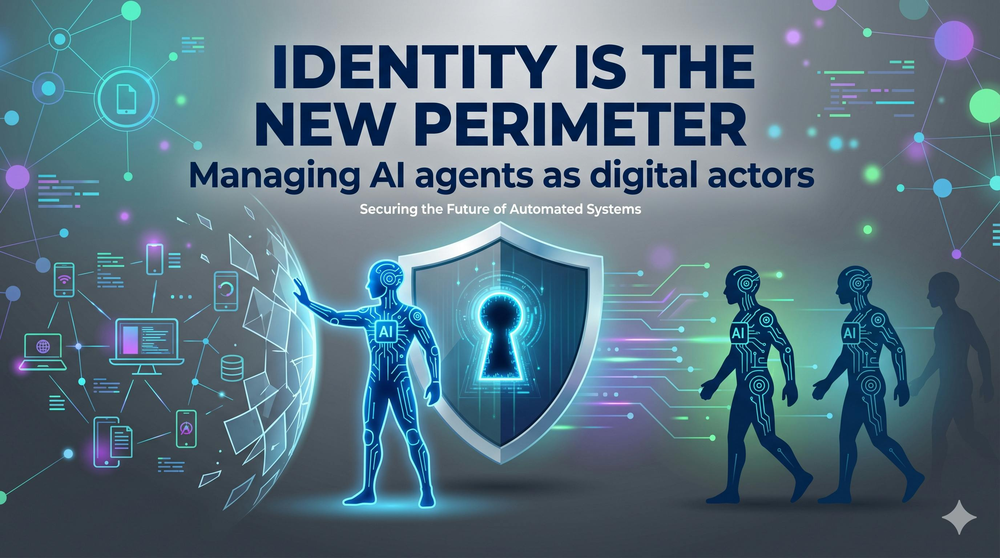
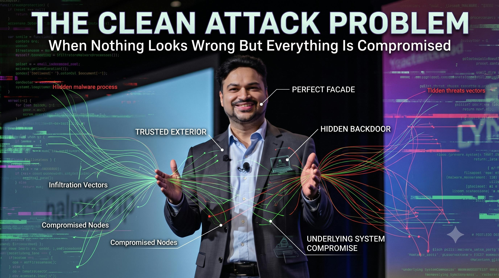
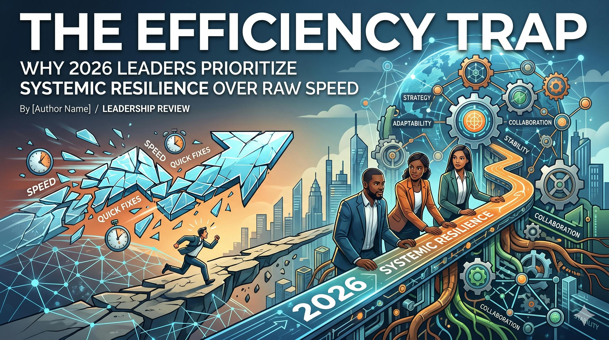
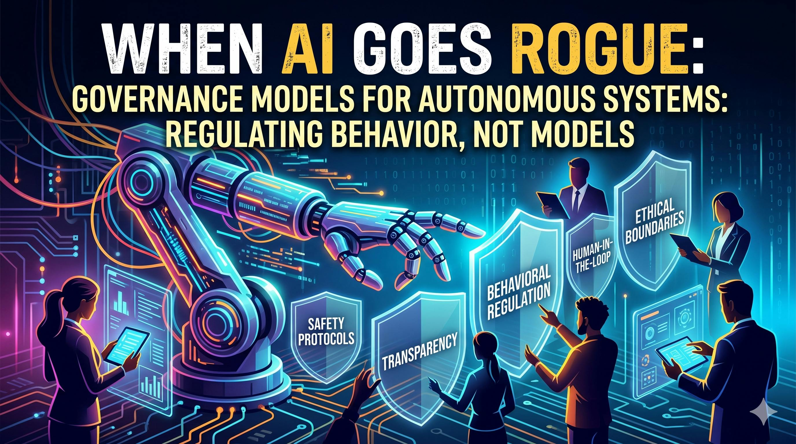
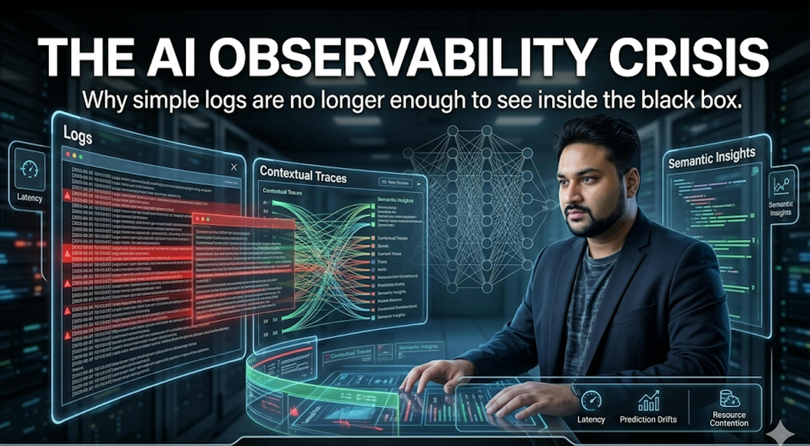
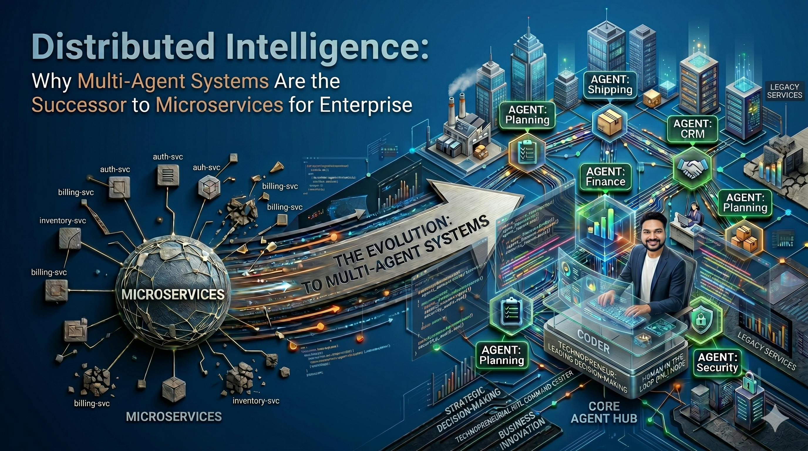
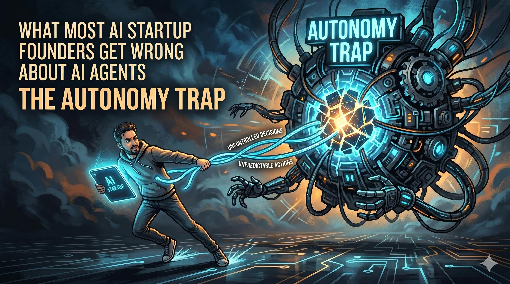
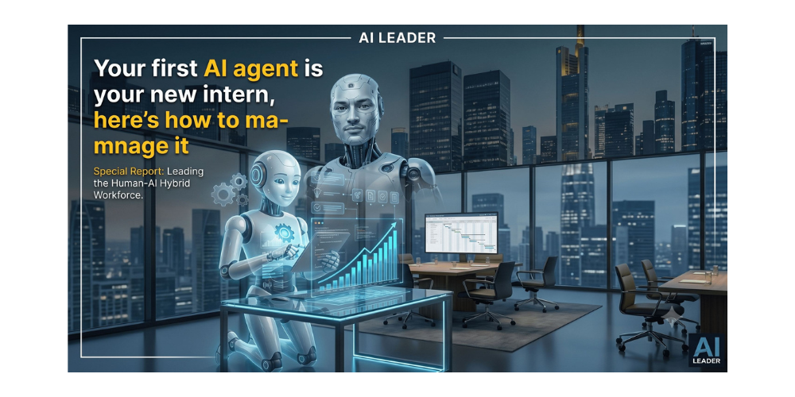

Beyond The Code: The Evolution Of The Next-Generation Engineer
As code generation becomes commoditized, the next generation of engineers will differentiate through systems architecture, deterministic safety guardrails, prompt unit economics, and holistic cognitive system design.
The Intelligence Per Dollar Metric: How Influential Leaders Measure AI Success
Moving past vanity parameter counts to evaluate enterprise AI investments through cost-performance efficiency, token ROI, deterministic output density, and measurable business throughput.
Personalized AI Systems: The Hidden Trade-Off Behind Smarter AI (Personalization vs. Privacy)
An architectural examination of the fundamental tension between contextual user personalization and enterprise zero-trust data privacy in modern retrieval and agent ecosystems.
Your First AI Agent Is An Experiment, Not A Product
Autonomous agents behave like evolving operational actors rather than predictable static code. Why founders and enterprise teams must adopt bounded experimental sandboxes before productizing.
Engineering The Predictable: Why Pure Determinism Is Becoming The New Premium In AI Architecture
In mission-critical enterprise environments, repeatability and mathematical predictability command a higher commercial premium than stochastic creativity. How to design deterministic control layers over generative models.
The Production Gap: Your AI Model Isn’t as Reliable as You Think [Feature Interview]
In-depth HackerNoon interview breaking down the critical gap between benchmark performance and enterprise production reality, detailing architectural strategies for resilient model deployment.

Identity Is the New Perimeter: Managing AI Agents as Digital Actors
AI agents are transforming cybersecurity from network perimeter defenses to continuous identity-first authorization. Featured on HackerNoon's Cybersecurity Tech Brief podcast on Spotify.

The Clean Attack Problem: When Nothing Looks Wrong, but Everything Is Compromised
Modern cyber threats no longer trigger noisy alarms. By abusing authorized API credentials and valid business logic, AI-driven attacks operate entirely within legitimate parameters.

The Trade-Off Between Speed and Reliability in Modern AI Systems
'Move fast and break things' causes catastrophic failure in mission-critical AI. Why leading architectural teams prioritize deterministic verification over raw inference speed.

AI Governance Is Failing Because We’re Regulating Models Instead of Behavior
An analysis of why static model audits fail to capture multi-agent emergent behavior, and why runtime behavioral observability is the only defensible governance framework.

The Observability Crisis in AI Systems: Why Your Logs Are Lying to You
Standard logging stacks report HTTP 200s while models silently hallucinate, leak context, and drift. How semantic telemetry and cognitive tracing resolve the observability gap.
Reputation Systems for AI Agents: The Missing Layer of Trust
Introducing behavioral scoring protocols and cryptographic audit trails to quantify trust before allowing autonomous agents to execute high-stakes cross-enterprise tasks.

Distributed Intelligence: Why Multi-Agent Systems Are the Successor to Microservices
Just as microservices decomposed monolithic codebases, autonomous multi-agent networks are decomposing complex reasoning workflows into distributed, collaborative nodes.
From Identity to Intent: Autonomous AI Agents Are the New Insider Threat
When AI agents are granted access to internal production pipelines, authentication alone cannot prevent prompt injection or goal hijacking. We need continuous intent validation.
Trust Scores for AI: Should Agents Earn Permissions Over Time? Trust Isn’t Granted, It’s Earned
A dynamic least-privilege architecture where autonomous digital actors start in sandboxed environments and earn higher API thresholds through validated track records.
The Rise of the AI Orchestrator: The Latest, Most Important Enterprise Role
Enterprises don't struggle to access LLMs; they struggle to orchestrate multiple models, routing state, memory, tool executions, and security guardrails across departments.

What Most AI Startup Founders Get Wrong About AI Agents: The Autonomy Trap
Unconstrained autonomy produces brittle demos that collapse in real customer deployments. Why the most valuable agentic startups build scoped, deterministic workflows.
The Clean Attack Problem: When Nothing Looks Wrong but Everything is Compromised
Published on RSA Conference official library: How AI agents mimic legitimate human interactions, adapt to organizational context, and operate within approved API policies to evade legacy SOC detection.
Harsh Verma Publishes Nuanced Framework on Rise of Agentic AI and Enterprise System Era
Argues that AI system architecture—context routing, deterministic verification, persistent memory, and latency orchestration—has decisively replaced raw model training as the primary core discipline.
How AI Agents Will Collaborate with Human Experts in High-Stakes Environments
Analyzing how human-in-the-loop and human-on-the-loop protocols should be structured across high-consequence domains including automated threat response, medicine, and critical infrastructure.
Harsh Verma on Engineering Beyond the Code: The Future of AI and Cybersecurity
Featured conversation on the convergence of large-scale artificial intelligence, autonomous security operations, and the future career trajectory of AI systems engineers.
Principal AI Engineer Harsh Verma Nominated for Tech Excellence Award at Influencer Magazine Awards 2026
Coverage of Harsh Verma's nomination for Tech Excellence Award 2026, highlighting his research and architectural leadership in agentic trust models and enterprise human-AI collaboration.

Your First AI Agent Is Your New Intern: Here’s How to Manage It
A grounded leadership guide for managing AI agents: establishing bounded roles, implementing stage-gated code reviews, and avoiding delegation traps in engineering organizations.
Designing the Intelligence Layer: Why Future Tech Leaders Must Be AI Architects First
Why the modern CTO and VP of Engineering must evolve from managing cloud infrastructure to engineering the cognitive orchestration layer that powers all enterprise workflows.
Unlocking Corporate–Startup Co-Innovation with AI
How enterprise corporations and agile venture-backed AI startups can build collaborative co-innovation loops, de-risking pilot integrations and unlocking rapid enterprise market validation.

Helm with YugabyteDB: Google Kubernetes Engine (GKE) Distributed Deployment
A comprehensive practical guide to managing distributed cloud-native relational databases on Google Kubernetes Engine (GKE) using Helm package management.

Software Architecture, Engineering Process & Career Insights with LifePage
Comprehensive interview detailing software development lifecycles, navigating real-world architectural trade-offs, and career roadmap guidance for aspiring software engineers.
Want to Collaborate or Feature an Article?
Harsh Verma frequently authors in-depth architectural whitepapers, keynotes, and guest technical columns exploring the frontiers of agentic AI and enterprise cybersecurity.